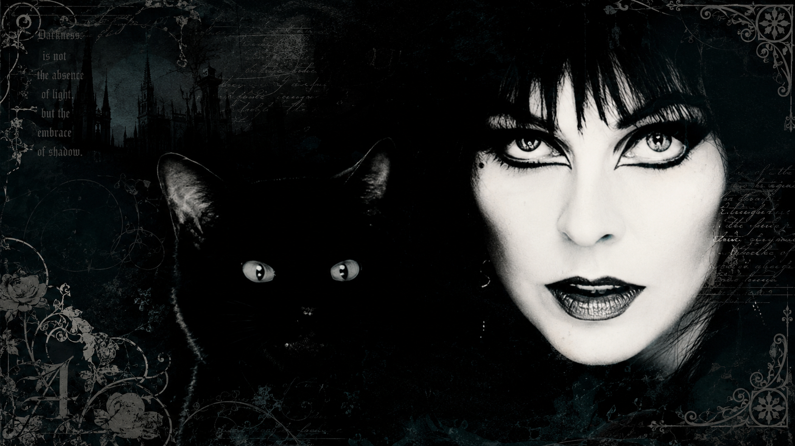

GothiCity: Seu Portal Definitivo para Explicar, Explorar e Celebrar a Essência das Subculturas Gótica, Emo, Punk e Alt**
Venha Conhecer o Novo Lar das Trevas e Descobrir Tudo Sobre Moda, Música e Atitude Gótica, Emo e Underground em Um Só Lugar
por: Juliana